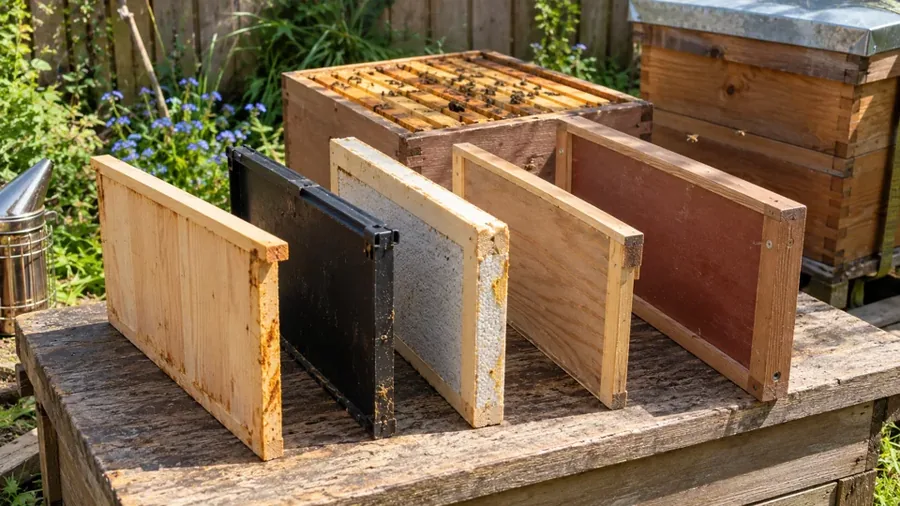
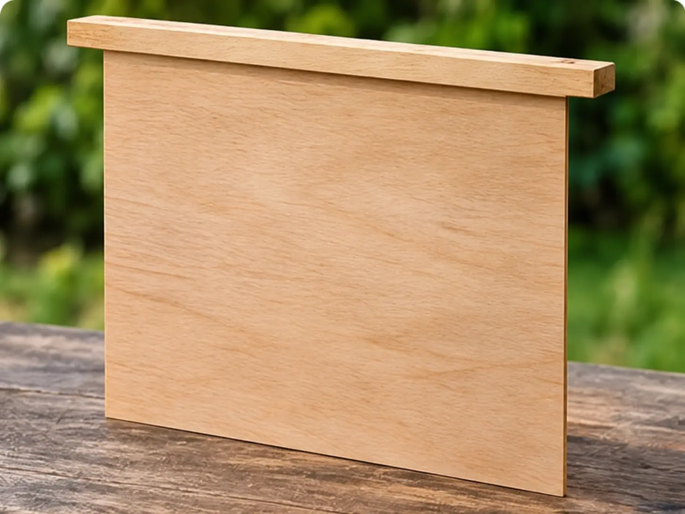
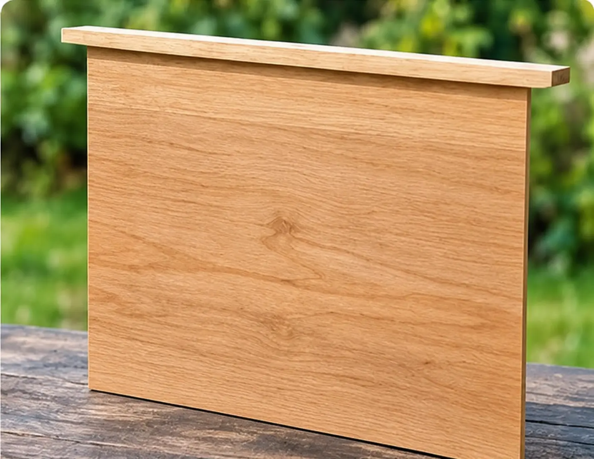
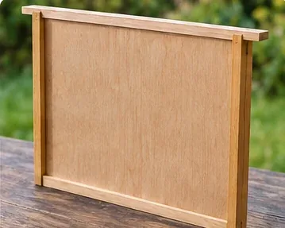
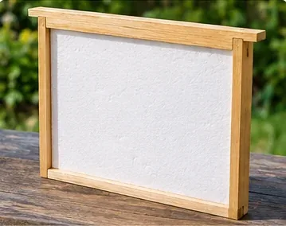
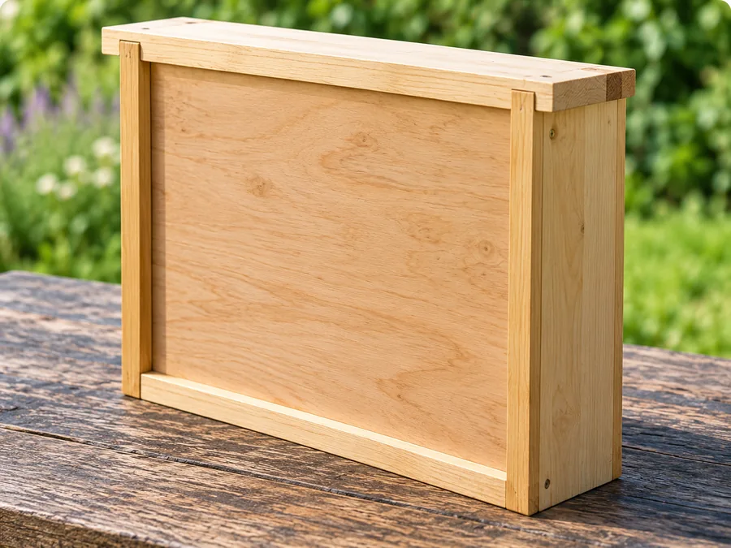
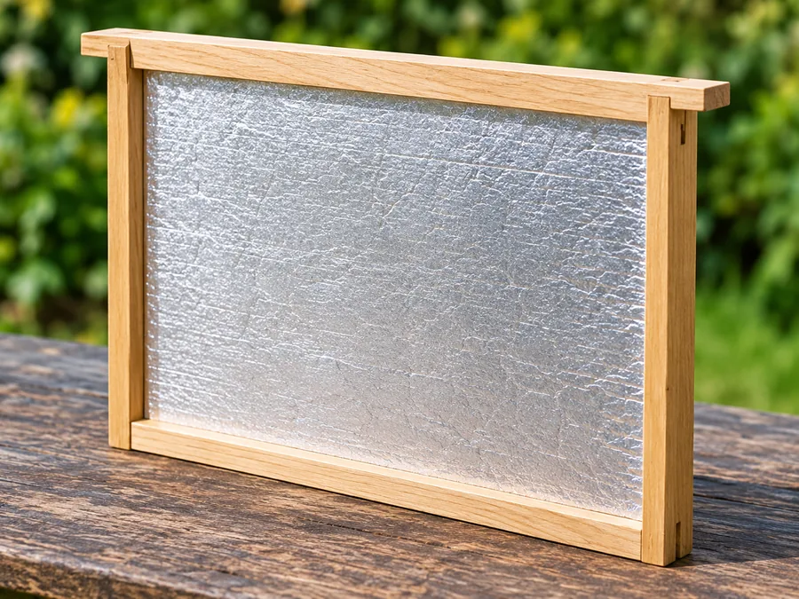
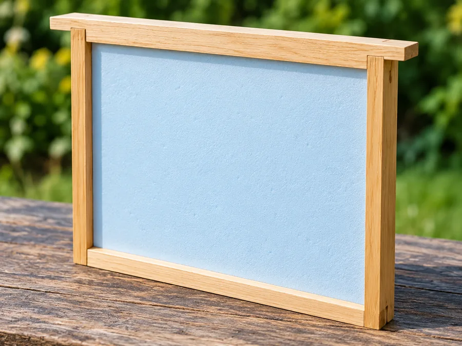

Last updated: 24 October 2026
What Are Dummy Boards and Hive Dividers?

A dummy board is usually a removable, frame-height board positioned beside the combs to make inspection easier. A follower board acts as a movable internal boundary, often reducing the space available to a colony. A division board is a partition: where two independent colonies share one hive body, it must form a genuinely bee-tight separation.
These names overlap in UK catalogues. You may see a follower board described as a division board, or a thick insulated follower described as a fat dummy. The safest approach is to check the purpose, the fit, the thickness and whether bees can pass around it, rather than buying by name alone.
The Different Types of Beehive Boards
These are useful design categories, not eight universally standardised products. Manufacturers may use two or more of these names for the same board.
| Board type | Other names you may see | What it does |
|---|---|---|
| Standard dummy board | Brood dummy, shallow dummy, spacer board | Usually stands beside the final frame, allowing a frame to be moved during inspections. |
| Follower board | Follower, movable partition, sometimes division board | Moves the boundary of the occupied hive space; the perimeter may or may not be bee-tight. |
| Division board | Hive divider, split-hive partition, dividing board | Separates compartments. For two colonies it must be bee-tight, with separate entrances and appropriate management. |
| Insulated dummy board | Thermal dummy, insulated follower | Provides a more insulating boundary than an ordinary thin board. |
| Fat dummy board | Wide dummy, thick dummy | Occupies more width than a conventional dummy board and reduces space for frames. |
| Wide insulated dummy | Enid Brown board, EB-style board, insulated fat dummy | A thick, insulated board used to narrow the brood nest or manage the colony's occupied space. |
| Foil-faced insulated board | Reflective insulated divider, foil-faced follower | Typically a rigid insulating core faced or wrapped with foil or another protective surface. |
| Rigid foam divider | PIR follower, XPS divider, EPS insulated board | A lightweight, often home-built insulating boundary; design and edge protection vary. |
Standard dummy board

This is the simplest version: usually a thin board with a top bar or lugs that allow it to hang like a frame. It is commonly placed at the edge of a set of brood frames. Removing it first gives you space to move the next frame without rolling bees between adjacent combs. Our step-by-step hive inspection guide explains how to handle and replace frames carefully.
Advantages: inexpensive, simple and useful during routine inspections.
Disadvantages: little insulation and normally not a suitable separator for two colonies.
Follower board
A follower board defines where the usable nest space ends. Depending on the hive and the board's dimensions, bees may be able to pass over, under or around it. It is often used with small colonies or expanding nucleus colonies, and is especially familiar in top-bar beekeeping.
Advantages: adjustable space, useful for a small colony.
Disadvantages: a loose fit may encourage comb behind the board and must not be assumed to isolate a queen. See how to prevent and correct cross-comb if bees build unwanted comb in empty spaces.

Division board

A true division board physically separates two compartments. A split brood box can only safely house independent colonies if the partition prevents bees from crossing and the system provides suitable entrances, ventilation, feeders and access for each colony. Some commercially named “division boards” are actually just followers, so check the design carefully.
Advantages: enables certain two-colony, queen-rearing or split-hive arrangements.
Disadvantages: poor fit can allow queens or workers to cross; colony management becomes more complex.
Insulated dummy board
An insulated dummy combines the shape of a dummy or follower board with a thermally resistive core. It may use wood shavings, closed-cell foam or a purpose-made insulating panel. It is especially attractive for a small brood nest where the beekeeper wishes to reduce the volume of unused space.
Advantages: can reduce heat transfer through the boundary.
Disadvantages: usually wider and costlier than a plain dummy; any exposed core needs protection.

Fat dummy board and the Enid Brown design

A fat dummy occupies the width of more than one thin board or even several conventional frame spaces. An Enid Brown (EB) style insulated dummy is one well-known wide insulated form. The important features are its thickness, insulating construction and intended use—not the name alone.
Advantages: an adjustable, insulated limit to the brood nest.
Disadvantages: fewer frames fit in the box and timely expansion remains essential as the colony grows.
Foil-faced and rigid-foam dividers


These are often DIY versions of insulated followers rather than separate functional categories. PIR, XPS and EPS all insulate, but differ in rigidity, durability and surface properties. A foil-facing is not a guarantee of extra thermal performance: reflective benefits depend on the construction and a suitable adjacent air space.
Advantages: lightweight and can be made to a specific depth or thickness.
Disadvantages: edges may be damaged by bees or hive tools, and some exposed surfaces cannot be hygienically cleaned.
What Materials Are Used?
Yes, plastic dummy boards are sold in the UK, as are wooden, plywood and insulated versions. A plastic board may simply be an easy-clean, solid divider; it should not automatically be described as thermally insulated.
The material matters because it affects durability, cleanability, insulation, weight and cost. In practice, many beekeepers choose a simple wooden dummy for inspection space and reserve insulated or specialist boards for more specific colony-management uses.
| Material | Advantages | Disadvantages / cautions |
|---|---|---|
| Solid timber | Robust, repairable, familiar material | Can absorb moisture or warp; relatively heavy |
| Plywood / birch ply | Easy to cut, affordable for DIY, fairly rigid | Cut edges can delaminate if poorly protected |
| Moulded plastic | Water-resistant, easily wiped down, durable | May crack or distort; properties depend on the plastic |
| Polypropylene / HDPE sheet | Lightweight, moisture-resistant | Thin sheet can flex; limited insulation on its own |
| EPS polystyrene | Lightweight and insulating | Fragile if left exposed; needs durable edges/facing |
| XPS insulation | Better rigidity than basic EPS; insulating | Can be gouged; needs suitable protective finish |
| PIR board | High insulation for its thickness | Exposed foam and damaged foil require protection |
| Wood and shaving-filled construction | Traditional and potentially durable when well enclosed | Bulkier; damp ingress is a concern |
Sizes, Thicknesses and Hive Compatibility
There is no universal thickness for a UK dummy board. Some are thin plywood boards, some are moulded plastic panels, and insulated versions can be many times thicker. The frame's nominal dimensions do not necessarily equal the external size of the board.
| Board / example | Published or example dimensions | Important detail |
|---|---|---|
| DIY National brood dummy | About 432 × 215 × 8 mm | Illustrative DIY design; check fitting clearance |
| DIY National shallow dummy | About 432 × 140 × 8 mm | Illustrative shallow/super design |
| Commercial National brood dummy example | 18 mm construction; top bar about 430 mm | Panel and top-bar dimensions may differ |
| EB-style wide insulated brood dummy example | About 432 × 215 × 66 mm | Occupies substantially more width than a thin dummy |
| Commercial-hive plastic dummy example | About 438 × 254 × 14 mm | Do not mistake Commercial hive size for National size |
These figures describe examples encountered in UK DIY instructions and supplier listings, not fixed manufacturing standards. For an explanation of common frame formats, see Beehive Frames Explained. Exact size, the meaning of “width”, lug length and the space taken up between frames vary by product. Check the current supplier drawing before ordering or cutting material.
| Hive / box | What to check |
|---|---|
| British National brood | Standard deep depth, top-bar/lug support and frame spacing |
| British National 14 × 12 | Extra-deep board; standard brood depth is too short |
| National shallow super | Shallow board; assess whether a dummy is needed in the honey super |
| WBC | Inner-box frame system and clearance, not the size of the outer lifts |
| Smith | Shorter lugs and matching Smith frame dimensions |
| Commercial | Commercial frame geometry and specific depth |
| Langstroth / Dadant | Exact manufacturer and depth; “deep” is not a universal size |
| Nucleus and top-bar hives | Internal width, follower profile and any special seals |
What is bee space?
Bee space is the narrow gap that honeybees generally leave open for passage, often described as roughly 6–9 mm. Larger unwanted gaps may attract brace comb; overly narrow gaps may be sealed with propolis. A dummy or follower must be fitted for its specific function: maintaining passage and making a completely bee-tight partition are different design requirements.
Advantages and Disadvantages at a Glance
| Type | Main benefit | Possible drawback |
|---|---|---|
| Thin dummy | Inspection working space | Little thermal benefit |
| Follower | Adjustable nest boundary | May not stop bee passage |
| Bee-tight divider | Separate compartments | Installation and colony management must be precise |
| Insulated dummy | More insulating boundary | Costs space and money |
| Fat dummy | Fills unused width | Less room for frames |
| EB wide insulated dummy | Combines insulation and nest narrowing | Must be moved as colony grows |
| Foil-faced panel | Lightweight insulating option | Edges/facing can deteriorate |
| Rigid foam panel | DIY customisation | Needs durable, bee-safe protection |
Insulation may improve the thermal characteristics of a hive boundary, but a particular board does not automatically guarantee healthier bees, higher honey yields or improved winter survival.
Dummy Board, Follower or Division Board: What Is the Difference?
Think about bee movement, not just the product label. These simplified diagrams show the important functional distinction.
Ordinary dummy board
Placed beside frames to make inspection easier. Bees may be able to move around its edges.
Wide insulated follower
A thick boundary reducing the available frame space. It need not be bee-tight.
Bee-tight division board
A sealed compartment divider intended to prevent workers and queens passing between sides.
When Should You Use One?
During inspections
A standard dummy board is useful at the outer edge of a British National brood box. Remove it first, shift the adjacent frame gently into the space and continue inspecting without crushing bees against the next comb.
With a small colony or nucleus
A follower or insulated dummy can reduce the amount of unoccupied space. Check regularly that the colony has adequate food and enough room for brood expansion.
As the colony expands in spring
Move or remove a thick dummy before it restricts laying space or stores. Managing a brood nest is an ongoing task, not a one-off winter arrangement.
In a honey super
Shallow dummy boards exist, but their use depends on the super and the spacing system. Some beekeepers use them for inspection space; others use appropriately spaced complete frames. For timing and space management, see our guide to when to add honey supers. Avoid creating broad empty areas in which bees will build unwanted comb.
In cold weather
An insulated follower may reduce heat loss through the side boundary, but it cannot replace adequate winter stores, good hive condition and appropriate management of moisture. See feeding bees for winter in the UK for advice on assessing stores. Avoid moving heavy stores or disturbing the nest unnecessarily in unsuitable weather.
Separating two colonies
Use only a system specifically designed for independent compartments, with a proven bee-tight partition, separate entrances and suitable management. An ordinary removable dummy board is not sufficient.
Common Questions and Practical Mistakes
- Assuming plastic means insulated: thin plastic may be tougher and easier to clean but is not equivalent to a thick insulated board.
- Buying on name alone: “division board” may mean a follower, not a sealed two-colony partition.
- Using the wrong depth: National brood, 14 × 12 and shallow super boards are not interchangeable.
- Leaving excess space behind the board: bees may build brace or wild comb there.
- Forgetting spring expansion: a thick board reduces the space available for frames and stores.
- Leaving bare insulation exposed: foam can be damaged and difficult to clean.
Can you make a dummy board yourself?
Yes. A DIY plywood board can be a straightforward project, provided the dimensions are checked against the actual hive. Use a sound, flat panel and ensure any top bar sits correctly on the frame runners. Insulated versions require durable, well-sealed faces and edges; a two-colony divider requires a more rigorous bee-tight fit.
Do you need one or two?
For simple inspection space, one standard dummy board is often enough. Two insulated boards may be used in certain brood-nest narrowing methods, but there is no universal requirement to use two. Match the arrangement to the colony, stores, available frame space and season.
Other Hive Boards That Are Not Dummy or Follower Boards
A queen excluder or crown board also sits inside a hive stack, but it is horizontal equipment rather than a frame-position divider. Do not group these together in a product comparison:
- Queen excluder
- Crown board / cover board
- Clearer or bee-escape board
- Snelgrove board and double-screen board
- Cloake board for queen rearing
- Bailey change board and specialised split boards
Likewise, a division-board feeder occupies a frame space but is primarily a feeder, not a separator. Queen introduction cages, isolation frames and drone trapping frames also have separate functions.
Which should a beginner choose?
For a typical British National brood box, begin with a properly sized standard dummy board if you want inspection working space. Our UK beekeeping equipment guide covers other essentials for a beginner. Consider an insulated follower if you have a clear colony-management reason to narrow the occupied space. Choose a genuine division board only for a compatible split-hive or queen-rearing arrangement.
Frequently Asked Questions
Not always. A dummy board normally creates working space beside frames. A follower board defines the edge of the occupied nest space. The terms overlap in some UK catalogues, so compare how the board is designed to fit.
Yes. Plastic versions are available for various UK hive systems. They can be durable and wipe-clean, but a thin plastic board is not the same as an insulated board.
A fat dummy is a wide board that occupies more space than a thin dummy. Some are insulated. The Enid Brown style is an example of a wide insulated dummy board.
No, not unless it is specifically designed and fitted as a bee-tight dividing partition. Ordinary dummy boards may allow bees and queens to pass around them.
There is no single thickness. Thin DIY plywood examples may be around 8 mm, while wide insulated products may be around 66 mm. Always check the exact product and the space it occupies.
Yes, shallow dummy boards are available. Use a board matching the super depth and manage frame spacing so bees do not build unwanted comb.
Join the Conversation
Beekeeping is all about learning from one another. Follow BeezKnees for more practical UK beekeeping guides, seasonal observations and equipment explainers.
Follow the BeezKnees Facebook Page